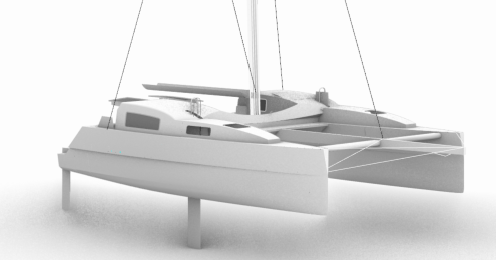

Naval Architecture & Marine Engineering — New Zealand
Engineering vessels built to perform and last.
Independent naval architecture across custom new builds, vessel upgrades, and structural and stability engineering — for clients who need the work done right.
Scroll to Explore